Tudo começou na China
(provavelmente)
Um breve resumo da história dos baralhos e jogos de cartas
Disclaimer
- Isso não é uma pesquisa histórica séria
- Nuances serão ignoradas
A Carta
Duas faces
oculta ou revela informaçõesTamanho uniforme
permitindo embaralhamento (ALTICE, 2014)Jogo de cartas
uso de baralho de cartas (PARLETT, 1990)
Primeiro Registro
1295
Primeiro registro de jogos de cartas (e não jogos com cartas) na China- Registro jurídico de caso contra Yan Sengzhu e Zheng Zhugou (LO, 2000)
JOGOS DE AZAR
Baralhos
- Extremamente popular, várias versões.
(LO, 2000) "Money cards"
com três ou quatro naipes
(PARLETT, 1990)Quantidade de dinheiro
(moedas, fios de moedas, miríades de fios e dezenas de miríades)
(CLARE, 2024)
- 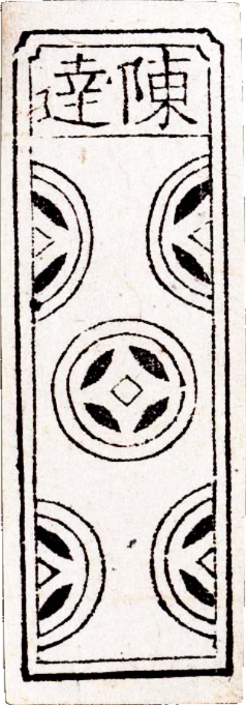
Moedas
- 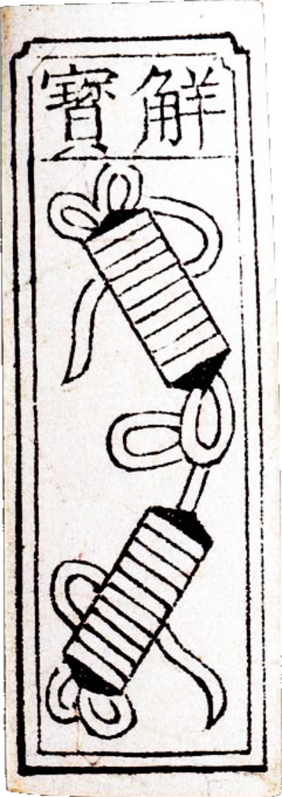
Fios de Moedas
- 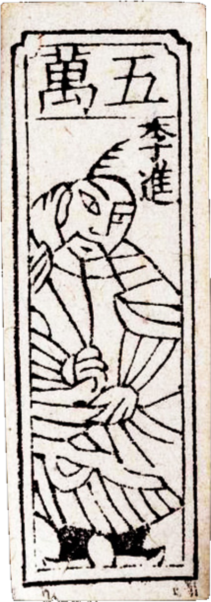
Miríades de Fios
Sultanato Mameluco
- Contato com China pela rota da seda
(EL-BASHA, 1992) Baralho Mamluk
com quatro naipes
(PARLETT, 1990)"Cartas da Corte"
(pessoas em posições de poder)
(DUMMETT; ABU-DEEB, 1973)

Rei

Governador

Segundo Governador
Cartas na europa
1376
Primeiros registros em documentos legais de Florença1377
Proibido em Paris1379
Proibido em St. Galle
(WINTLE, 1996)
O Tarot
Déc. de 1440
na corte de Milão
(FARLEY, 2009)Baralho "comum"
com quatro naipes e cartas da corteTrionfi
(Triunfos, trunfos): 22 cartas adicionais
(DUMMETT, 1993)
- 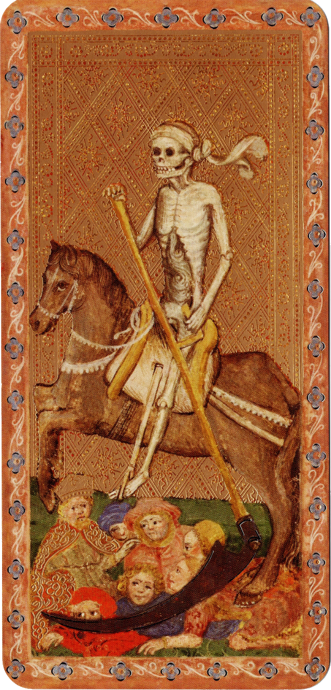
Morte
- 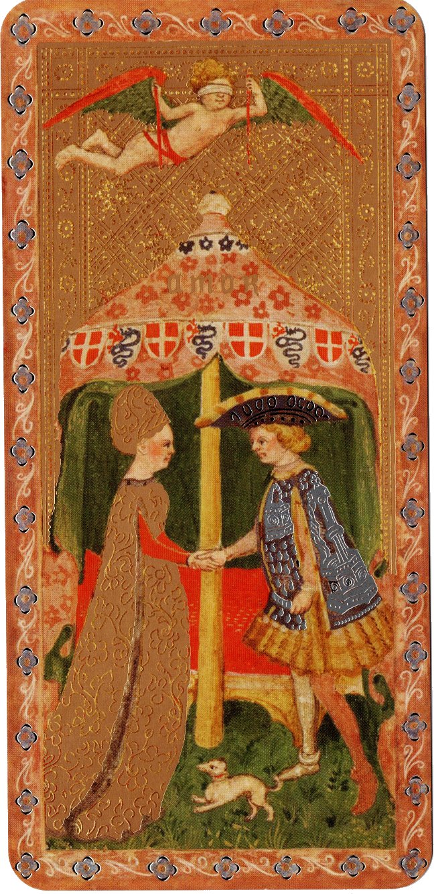
Amor
- 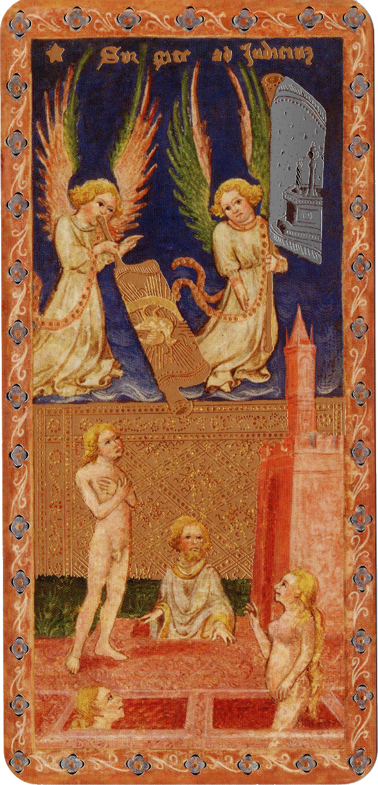
Juízo final
- 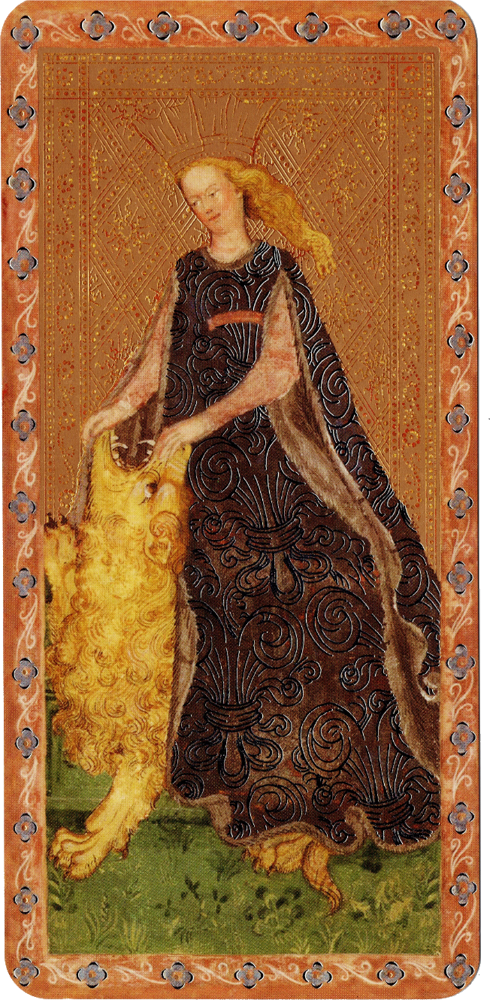
Fortitude
- 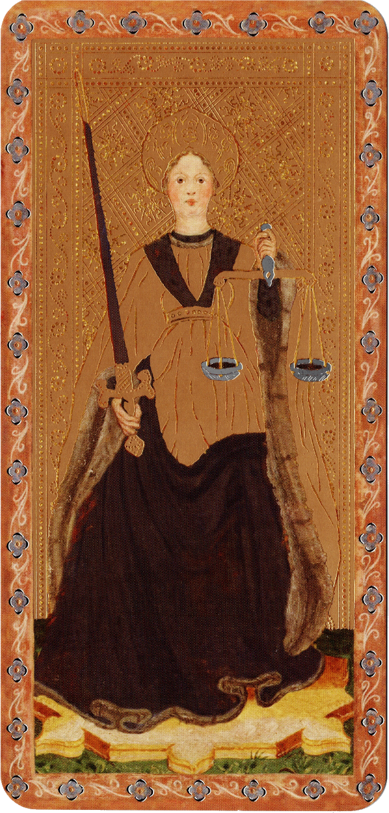
Justiça
- 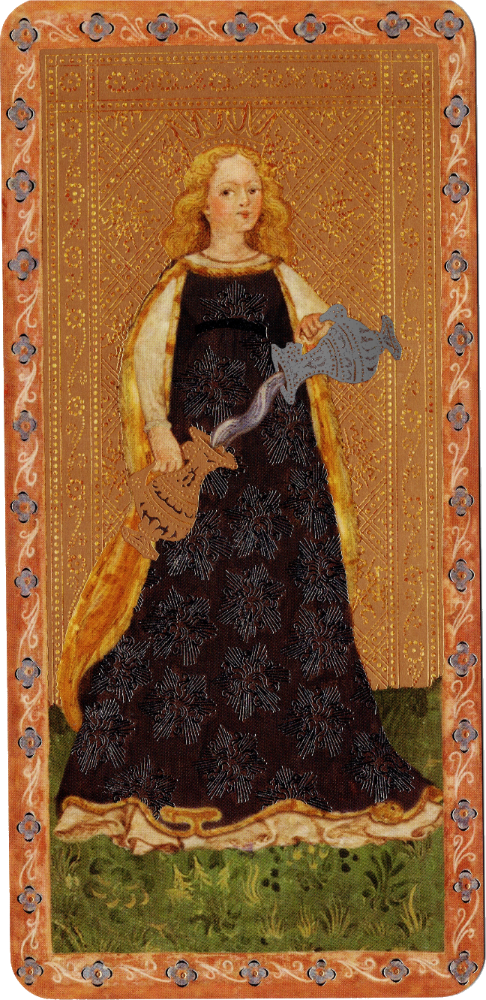
Temperança
- 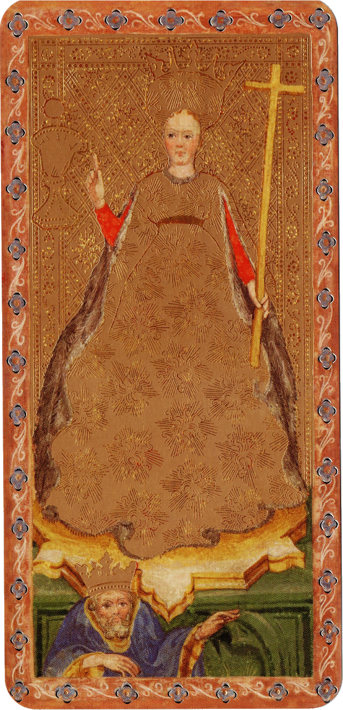
Fé
- 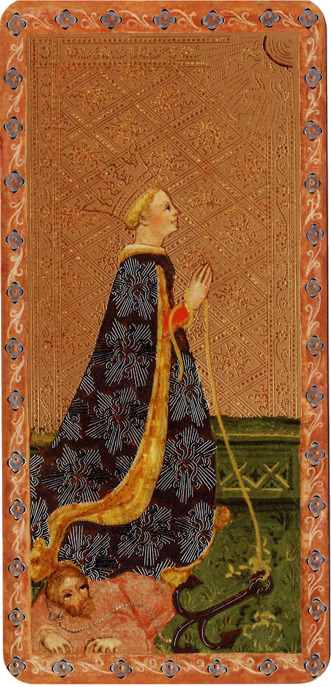
Esperança
- 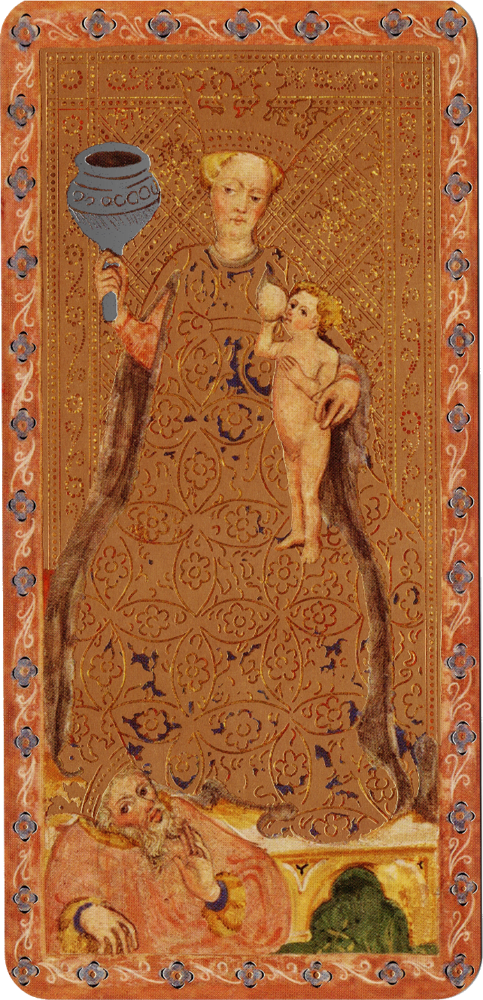
Caridade
Baralhos Europeus
Oposição da Igreja
Imagens blasfemas
(HUSON, 2004)- Não afeta a popularidade
Versões regionais
com naipes diferentes
- 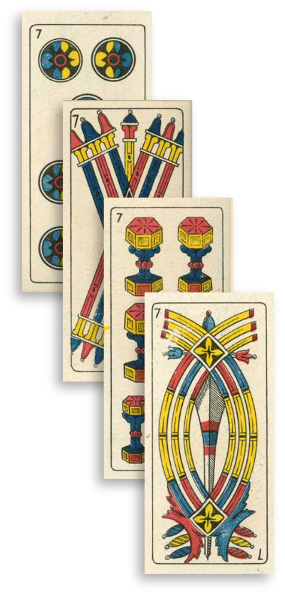
Italiano
- 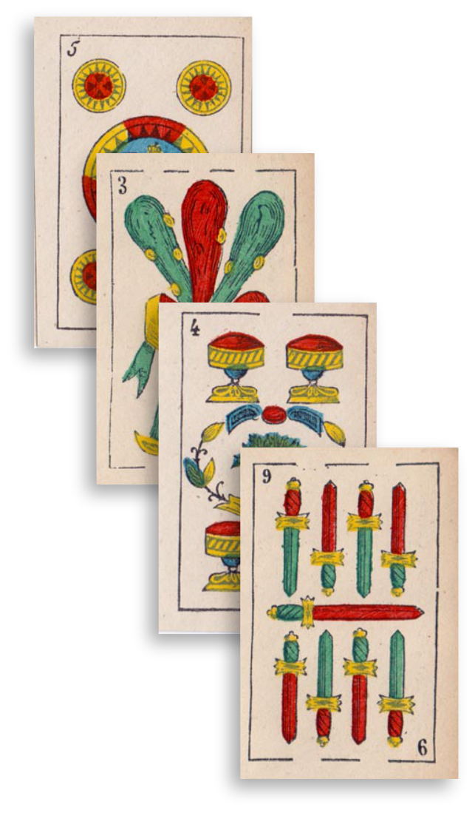
Espanhol

Alemão
- 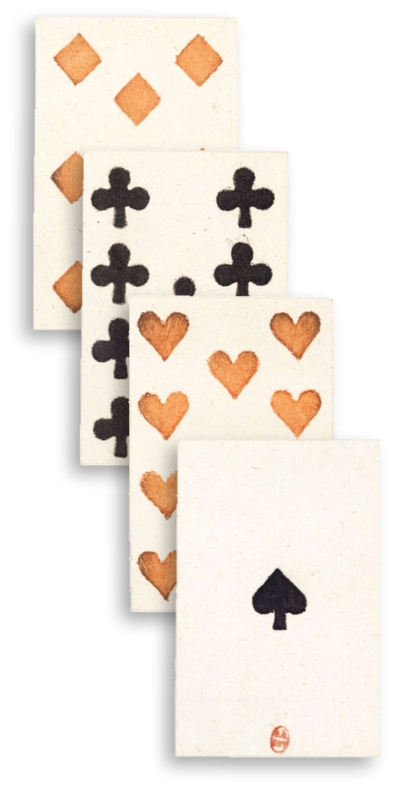
Francês
Naipe Português
-
Sistema Latino
Copas, Espadas, Bastões e Ouros
(DUMMETT; MANN, 1980) -
Baralho do Dragão
Dragões nos Ases
(MANN, 1973)
Baralho no Japão
-
Francisco Xavier
em 1549
(CLARE, 2024) -
カルタ
(Karuta)
Karuta
-
1638
Proibição de Namban Karuta
1648
Proibição de Tensho Karuta
-
1790
Proibição de Unsun Karuta
(MANN, 1973)
Hanafuda
-
Proibição leva a um novo jogo (SALTER, 2006)
“Cartas flor”
divididos em 12 naipes de 4 cartas(CLARE, 2024)
-
1885-86
Venda permitida em Tokyo (SALTER, 2006)
(1926-1945)
Nintendo
-
1889
Jogos de cartas
Após 1980
Jogos eletrônicos (BURCH; LEE, 2024)
-
1999
Jogos de cartas?
Pokemon TCG
- 1996 no Japão, 1999 nos EUA (BURCH; LEE, 2024)
Tsunekazu Ishihara
durante a produção de Pokemon Red e Blue (WONG, 2019)
-
Magic: The Gathering
Coleção de quase 10 mil cartas (LOST WORLDS, 2019)
Trading Card Game
-
Richard Garfield
Mistura de cards colecionáveis e jogos de estratégia (CHALK, 2017) Regras Globais
que governam o jogo
-
Regras modificadoras
em cada carta (CHALK, 2017)
Booster Packs
-
Pacotes de Cartas
Semelhante à cards de beisebol (KAUFELD; SMITH, 2006)
Pacotes Opacos
Cartas desconhecidas até ser aberto
Chase Cards
Cartas mais raras (CRADDOCK, 2004)
Booster Packs
-
Loteria?
(CRADDOCK, 2004)
JOGO DE AZAR?
- 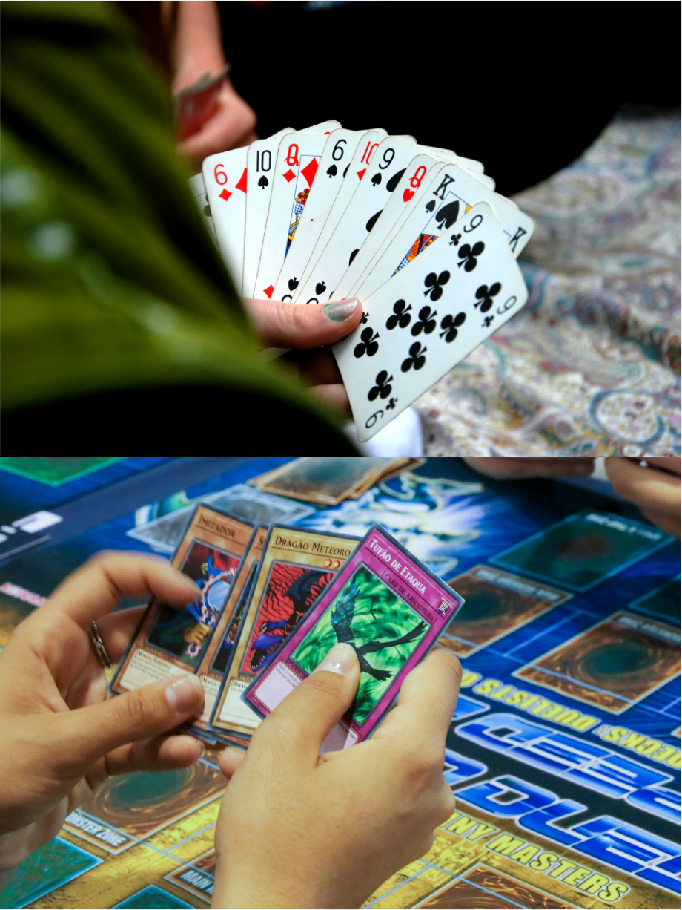
Físico
- 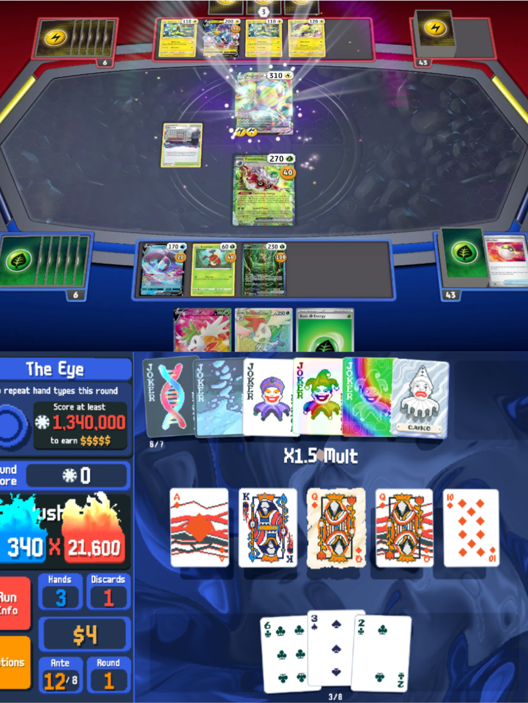
Digital
- 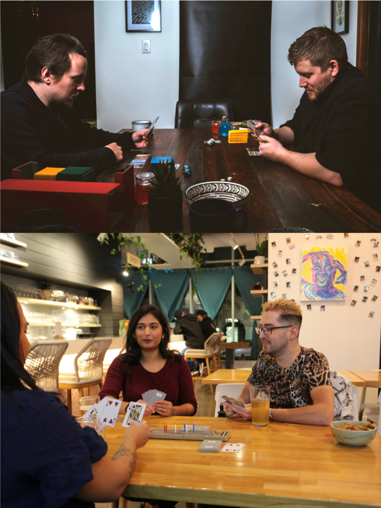
Casual
- 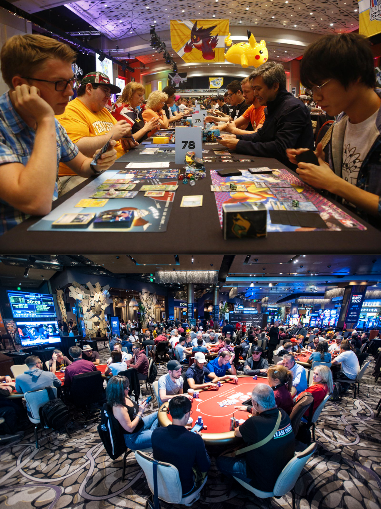
Competitivo
Bibliografia
- ALTICE, Nathan. THE PLAYING CARD PLATFORM. Analog game studies, [S. l.], v. 1, n. 4, 2014.
- BURCH, Haley; LEE, Newton. Pokémon and World Championships. Em: LEE, Newton (org.). Encyclopedia of Computer Graphics and Games. Cham: Springer International Publishing, 2024. p. 1431–1435.
- CHALK, T. Generation Decks: The Unofficial History of Gaming Phenomenon Magic: The Gathering. [s.l.] : Solaris, 2017.
- CLARE, Tim. The Game Changers: How Playing Games Changed the World and Can Change You Too. 1st ed. Edinburgh: Canongate Books, 2024.
- CRADDOCK, Kyle D. The Cardstock Chase, Trading Cards: A Legal Lottery? GAMING LAW REVIEW, [S. l.], v. 8, n. 5, p. 310–317, 2004.
- DUMMETT, Michael. The history of card games. European Review, [S. l.], v. 1, n. 2, p. 125–135, 1993.
- DUMMETT, Michael; ABU-DEEB, Kamal. Some Remarks on Mamluk Playing Cards. Journal of the Warburg and Courtauld Institutes, [S. l.], v. 36, n. 1, p. 106–128, 1973.
- DUMMETT, Michael; MANN, Sylvia. The game of Tarot: from Ferrara to Salt Lake City. London: Duckworth, 1980.
- EL-BASHA, Hassan. Chinese Impact on Mamluk Minor Arts. Senri Ethnological Studies, [S. l.], n. 32, p. 147–170, 1992.
- FARLEY, Helen. A cultural history of tarot: from entertainment to esotericism. London: I. B. Tauris, 2009.
- HUSON, P. Mystical Origins of the Tarot: From Ancient Roots to Modern Usage. [s.l.] : Inner Traditions/Bear, 2004.
- KAUFELD, John; SMITH, Jeremy. Trading Card Games For Dummies. Indianapolis: Wiley Publishing, Inc., 2006.
- KELLY, Michaela. Patriotic Pedagogy: How Karuta Game Cards Taught a Japanese War Generation. [s.l.] : BRILL, 2022.
- LO, Andrew. The game of leaves: an inquiry into the origin of Chinese playing cards. Bulletin of the School of Oriental and African Studies, [S. l.], v. 63, n. 3, p. 389–406, 2000.
- LOST WORLDS. History Of Japanese Tcgs #1: The Makers Of Pokémon (1995-96). 2019. Disponível em: https://www.youtube.com/watch?v=uNOSF9VvXDI. Acesso em: 10 ago. 2025.
- MANN, Sylvia. Collecting playing cards. New York: Bell Publishing Company, 1966.
- MANN, Sylvia. Portuguese playing cards and their journeys. Em: TILLEY, Roger (ed.). A history of playing cards. New York: Clarkson N. Potter, Inc., 1973. p. 181–187.
- PARLETT, D. The Oxford Guide to Card Games. New York: Oxford University Press, 1990.
- SALTER, Rebecca. Japanese Popular Prints: From Votive Slips to Playing Cards. Honolulu: University of Hawaii Press, 2006.
- WINTLE, Simon. Early History of Playing Cards & Timeline. 1996. Disponível em: https://www.wopc.co.uk/the-history-of-playing-cards/early-history-of-playing-cards. Acesso em: 3 ago. 2025.
- WONG, Alistair. Pokemon Card Managers On Origins Of The Card Game And The Varied Illustrations. Siliconera, 2019. Disponível em: https://www.siliconera.com/pokemon-card-managers-on-origins-of-the-card-game-and-the-varied-illustrations/. Acesso em: 10 ago. 2025.
- WOOD, William Zachary. Shell-matching Games, Portuguese “Carta,” and Yōkai Visual Culture: The Making of Edo Yōkai Karuta. 京都精華大学紀要, [S. l.], v. 58, p. 171–184, 2025.
/